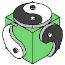

Purpose, Indications, and
Contraindications of Tuina
Contraindications of Tuina
| |
| |
| |
| |
| |
| |
| |
| |
Purposes of Tuina
 | removing obstructions, restoring balance, and stopping pain | |
| increasing qi and blood circulation | |
| realigning of joints | |
| mobilizing of joints | |
| healing of soft tissue injuries | |
| adjusting (physically and the qi of) internal organs | |

Indications for Tuina
| a full range of musculoskeletal complaints | |
| chronic stress-related disorders including those of the digestion system, respiratory | |
| system, and reproductive system | ||
| great for and the most widely used modality for the treatment of children (pediatrics) in | |
| China | ||
| for the treatment of the needle phobic (an alternative to acupuncture) | |
| If it can be treated with acupuncture or other types of massage, then it can be treated | |
| with Tuina. | ||
| Tuina is generally not a mild, sedating, or “fall asleep” massage. | |
Contraindications for Tuina
These are very similar to the contraindications for most types of bodywork and massage.
These are very similar to the contraindications for most types of bodywork and massage.
| fractures | |
| phlebitis | |
| infectious conditions | |
| open wounds | |
| lesions | |